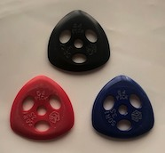

PROFILE
福島県福島市出身。５歳頃からクラシックピアノを習う。中学生の時に、
姉と兄の影響でロックに興味を持つ。高校生活ではバンドを組むつもりだったが、
進学した高校に軽音部がなかったため、仕方なくジャズ研究部に入部。
そこでジャズと出会い、市内のジャズ喫茶『ミンガス』で聴いたグラントグリーンの
演奏をきっかけにはまっていく。２０１２年に大学進学に伴い上京。
在学時より演奏活動を始める。
姉と兄の影響でロックに興味を持つ。高校生活ではバンドを組むつもりだったが、
進学した高校に軽音部がなかったため、仕方なくジャズ研究部に入部。
そこでジャズと出会い、市内のジャズ喫茶『ミンガス』で聴いたグラントグリーンの
演奏をきっかけにはまっていく。２０１２年に大学進学に伴い上京。
在学時より演奏活動を始める。
ジャズギターの王道を行くスインギーなスタイルで、同世代のみならず数々のベテランミュージシャンとも共演を重ねている。
主な共演ミュージシャン（敬称略、五十音順）
安保徹ts、井上智g、井上銘g、大友義雄as、片岡雄三tb、金澤英明b、岸ミツアキp、
高内春彦g、竹中俊二g、田辺光邦g、谷口英治cl、中牟礼貞則g、古野光昭b、峰厚介ts、
宮之上貴昭g、村田憲一郎ds など
使用ギター
| Zemaitice V22SH DBM セミアコ | 1957年製 Gibson ES-17 フルアコ | 1946年製 Gibson L-4 フルアコ |
|---|
使用ピック

久留米精工 64pick 3-POM50R1など64pickの詳細はコチラ⇒http://shigoto-dougu.net/index.php